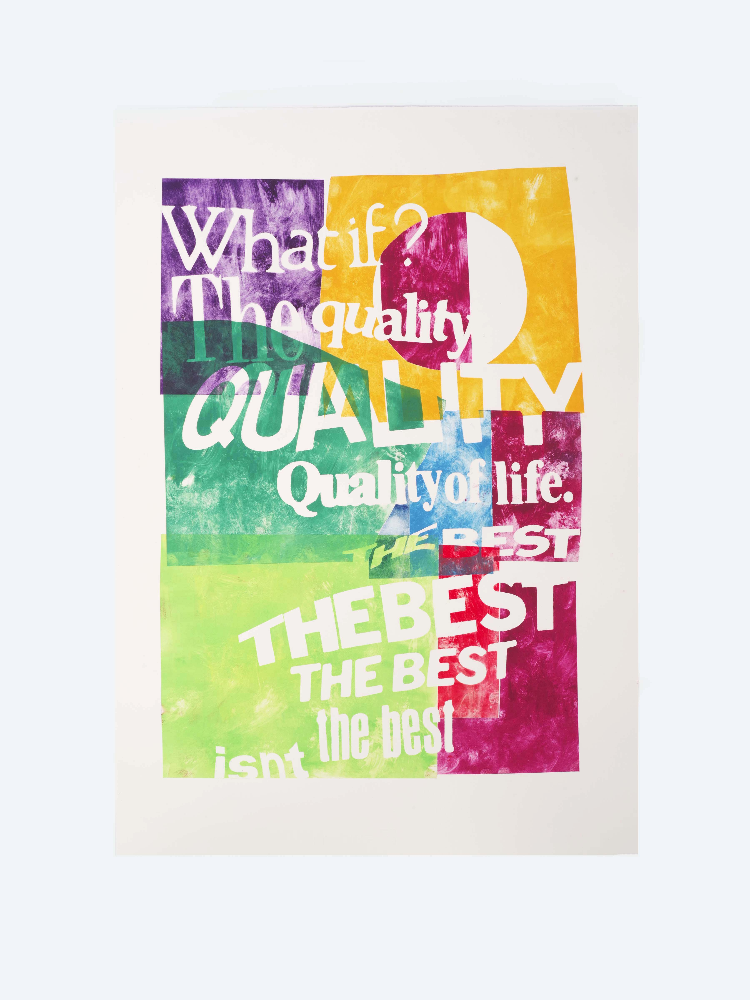

Robin Cameron — Power Posters, 2022
My most recent project I’ve been thinking about power as a theme in this body of work. This project came out of my experiences with infertility. I wanted to create printed posters / signs, containing information for generations that come after me (children now or in the future), in the vein of Sister Corita’s Kent’s works. The works were made with a technique called pochoir which is a stencil technique. There’s a graphic quality with descriptive poetic language, a definite searching quality with a leaning on radical sincerity’. I’ve been working on a series of writing about my experiences that accompanies these prints.
My most recent project I’ve been thinking about power as a theme in this body of work. This project came out of my experiences with infertility. I wanted to create printed posters / signs, containing information for generations that come after me (children now or in the future), in the vein of Sister Corita’s Kent’s works. The works were made with a technique called pochoir which is a stencil technique. There’s a graphic quality with descriptive poetic language, a definite searching quality with a leaning on radical sincerity’. I’ve been working on a series of writing about my experiences that accompanies these prints.


pochoir —
noun, po·choir (ˈ)pōsh¦wär
plural-s : a stencil process for making colored prints or adding color to a printed key illustration
noun, po·choir (ˈ)pōsh¦wär
plural-s : a stencil process for making colored prints or adding color to a printed key illustration


